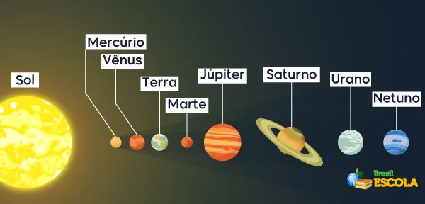
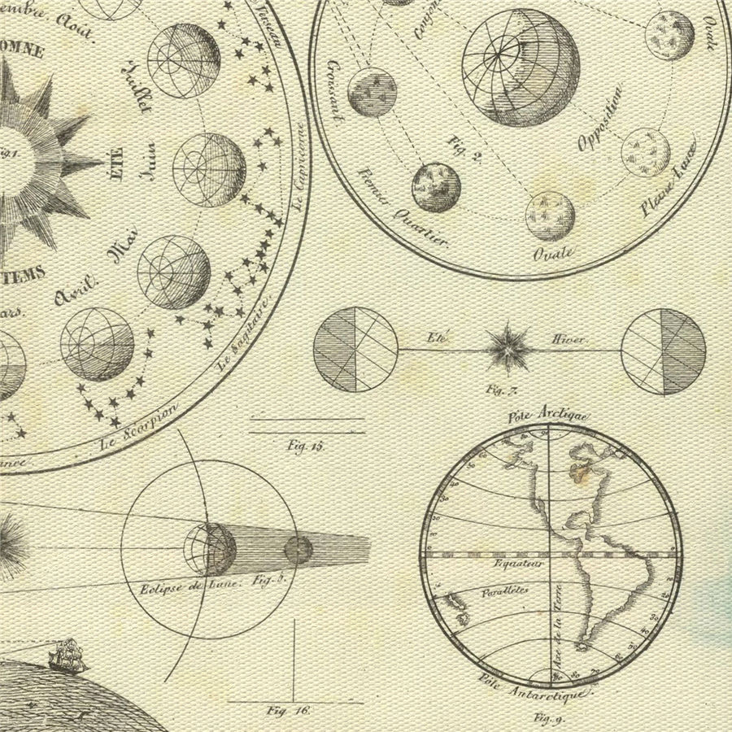

Marte é o 4 planeta do sistema solar, e sendo o 4 maior entre os planetas rochosos logo após a terra e antes do cinturão de asteroides. Tendo metade do tamanho da terra, e sua massa sendo de:(marte: (6,39 x 10^23 kg). Terra: 5,972 x 10^24 kg ). a aproximadamente 227.943.824 km de distância do sol, marte é um planeta no qual chama a atenção dos ciêntistas e dos astrofísicos por sua composição, história e similaridade com a terra em alguns aspéctos.
/Representação do sistema solar
O primeiro a observar marte de maneira mais aprofundada foi Galileu Galilei, com o auxílio de um telescópio por volta dos anos de 1610, o nome "Marte", tem origem da dinvindade romana deus da guerra, que inspirado nos gregos se aximila ao deus da guerra ares. por sua coloração avermelhada, por muitos anos os gregos e romanos adoravam o astro.
/Antiga representação do sistema solar
Marte surgiu a aproximadamente a 20 milhões de anos atrás, com uma atmosfera ténue e bem rarefeita por conta da solidificação do núcleo liquido no centro do planeta, esse núcleo sólido formado por magma e a precensa massiva de elementos pesados como ferro, gera um campo magnético ao redor do planeta que protege a atmosfera dos ventos solares causados pelo sol. Sem esse campo magnetico a atmosfera é varrida do planeta. por conta disso o calor que era mantido no planeta por conta da atmosfera escapa para o espaço e torna um planeta frio e árido, podendo chegar a temperatura de -125 graus, porém no verão pode-se chegar a 22 graus. Sendo a atmosfera um dos ítens esséciais para a vida que conhecemos. por conta dessa sólidifcação do núcleo eventos vulcanicos no planeta deixam de ser frequentes no planeta, sem esses eventos vulcanicos gases não liberados para a atmosfera fazendo de marte um planeta geólogicamente morto. Na sua atmosfera possue grandes quantidades de dióxido de carbono, cerca de sua atmosfera é de 95% de CO2. Em sua superfice marte possue basalto vulcânico com um alto conteúdo em óxidos de ferro no qual dá a coloração avermalhada do planeta, em seus polos possuem 2 geleiras com agua congelada em suas superfices.
/Vídeo 3d de marte
Marte no início do sistema solar na formação da terra, marte também possuia junto a vênus e terra, água liquida em sua superfice com grandes mares sendo feitos sobre o planeta, nesse tempo o núcleo de marte estava ativamente em seu estado líquido, formando vulcões que liberavam gases para a atmosfera fazendo com que o calor se mantivesse no planeta tornando o planeta mais agradável termicamente, fazendo-o com que a água permanecesse em seu estado líquido, táis caracteriscas muitos similares ao que aconteceu na terra que ajudou para a formação da vida no planeta, porém como sabemos marte esfriou, perdendo sua atmosfera, calor e sua água, porém muitos estudos e pesquisas direcionadas a marte trabalham para saber se nesse período em que o planeta esteve nessas condições foi capaz de produzir vida ou não.